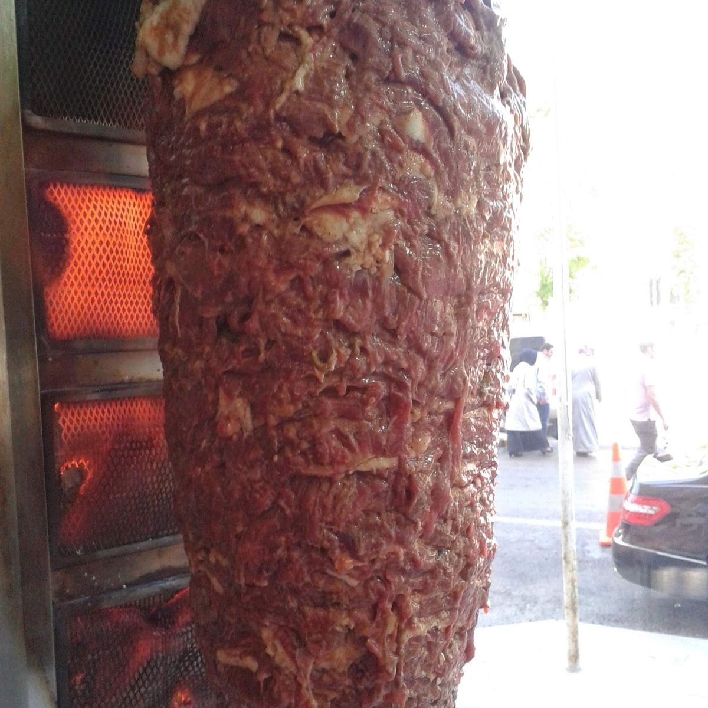
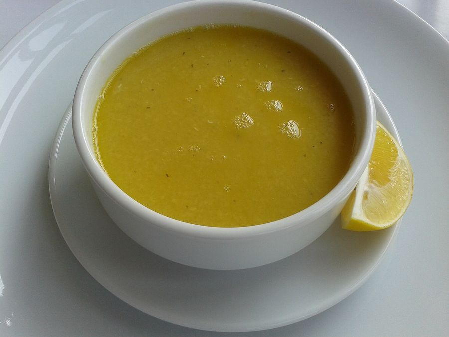
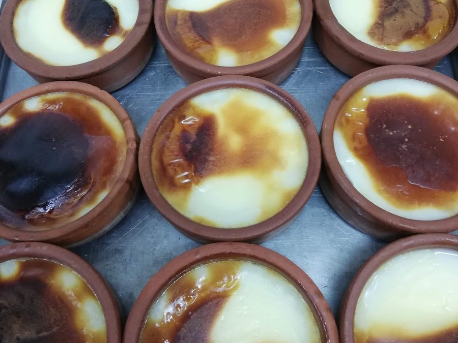
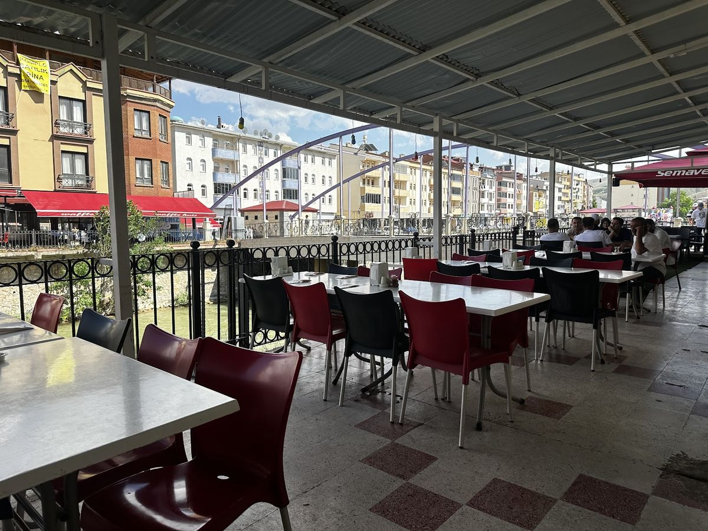
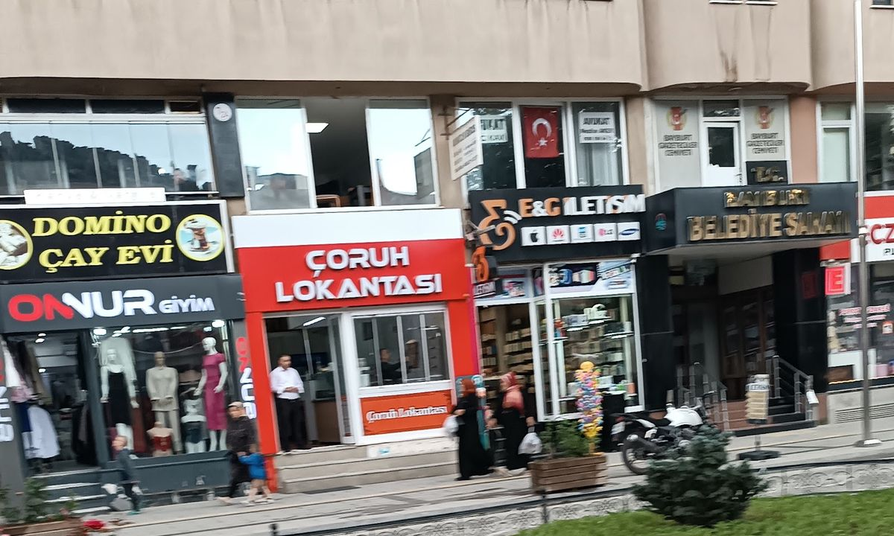
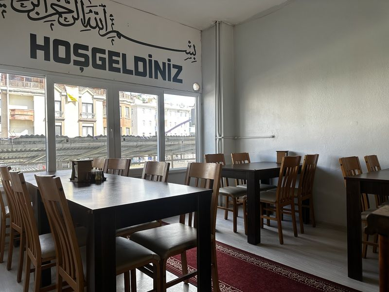
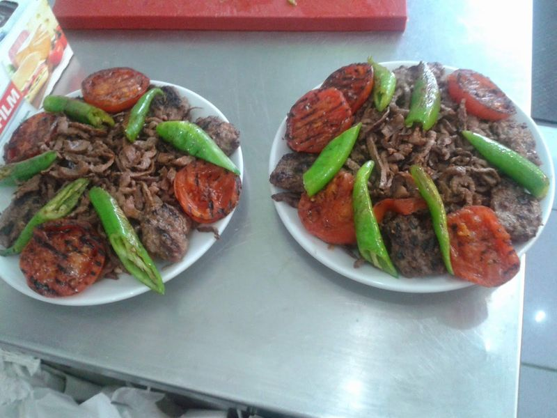

Meşhur
Odun Ateşinde Et Döner
Bayburt’ta döner denince akla gelen adres. Odun ateşinde pişer, porsiyon, pilav üstü ya da iskender olarak servis edilir.
Bayburt Merkez · Cumhuriyet Cd. · Belediye altı
Odun ateşinde pişen meşhur et dönerimiz, her gün taze hazırlanan tencere yemeklerimiz ve sıcak çorbalarımızla; Çoruh’a bakan terasımızda sizi bekliyoruz.

Hakkımızda
Çoruh Lokantası, Cumhuriyet Caddesi’nde, Belediye’nin altında, Çoruh nehrinin hemen kenarındadır. Geleneksel Türk mutfağının en samimi lezzetlerini sunarız: odun ateşinde pişen meşhur et dönerimiz, her gün taze hazırlanan tencere yemeklerimiz ve sıcak çorbalarımız.
Sabah 6’da kapımızı açar, gece yarısına kadar ocağımızı sıcak tutarız. İster terasımızda nehri seyrederek, ister salonumuzda oturun; ister paket alın, ister adresinize gönderelim.
Dönerimiz odun ateşinde pişer; tadını misafirlerimiz yorumlarında hep ilk sırada anar.
Kuru fasulye, güveç, sulu köfte, Bayburt tava… Her gün taze, ev yemeği tadında.
Kale manzarası ve nehrin sesi eşliğinde, sakin ve temiz bir ortam.
Ustanın tavsiyesi
Misafirlerimizin en çok sorduğu, en çok tekrar istediği tabaklar.

Bayburt’ta döner denince akla gelen adres. Odun ateşinde pişer, porsiyon, pilav üstü ya da iskender olarak servis edilir.

Tane tane pilav, bol döner, yanında söğüş domates ve soğan.

Sabah 6’dan itibaren: mercimek, ezogelin, kesme, işkembe, kelle ve doduk paça.

Toprak kâsede, üstü kızarmış. Yemeğin üstüne demli çayla birlikte.
Mekânımız
Yazın terasta, kışın sıcak salonumuzda. Aileler, gruplar ve yolcular için geniş oturma alanı.




Misafirlerimiz ne diyor?
“Bayburt’a gelip de döner yemek istiyorsanız tercihiniz burası olmalı. Çoruh’un kenarında sakin bir atmosfer.”
“Ev yemeği tadında, yöresel lezzetler sunuyorlar. Nehir kenarındaki konumu ve atmosferi büyüleyici.”
“Yanından Çoruh nehri akıyor. Onu seyrederek yemeğinizi yiyorsunuz.”
“Lokantanın temizliği ilk bakışta dikkat çekiyor. Çalışanların yaklaşımı çok kibar.”
Bizi ziyaret edin